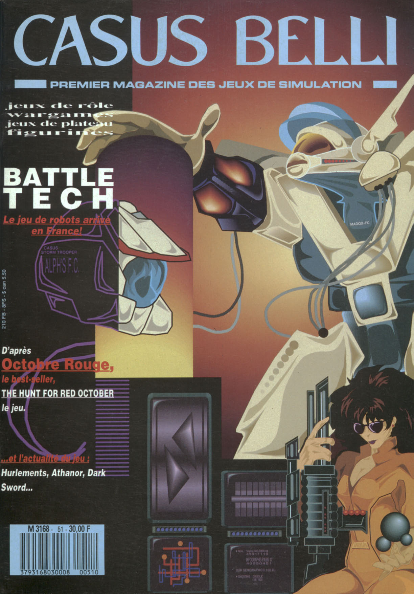

Allez zou, la suite avec pas trop d’intervalle avec le numéro précédent comme ça je finis de rattraper la synchronisation de période de parution des Casus Excelsior d’il y a 35 ans, et tant pis si j’ai distancé la numérotation des Casus BBE qui sont encore trop aléatoire et trop long à paraître entre chaque numéro.
Or donc, le Casus 51 couvre la période de mai – juin 1989. L’édito se réjouit du temps passé sur le Salon des Jeux et de la Maquette, dont la 4ème édition vient alors de se dérouler. Quant à la couverture, c’est Battletech qui est à l’honneur, sous les coups de crayon de Sophie Mounier.

Ailleurs, dans le monde, les événements se sont accélérés, entre tragédie et espoir. Alors que l’Europe de l’Est commence à basculer pour de bon, la Chine prend le chemin à rebours avec le massacre de la place Tien An Men : le mouvement étudiant et populaire démarré en avril est écrasé dans le sang, en direct à la TV et à la radio, dont je me rappelle quelques reportages affolés. Et puis il y a surtout cette image éternelle, même si elle est encore aujourd’hui lourdement censurée en Chine à tel point que les jeunes générations l’ignorent assez largement…
Après une décennie de réformes qui sortait la Chine de l’héritage maoïste et l’ouvrait à l’international, celle-ci repart dans une décennie (dans les années 1990) où elle sera reléguée en arrière-plan avant de faire son retour sur la scène mondiale avec le XXIème siècle, mais en n’ayant rien perdu du régime répressif hérité de cette période.
La bifurcation et le contraste avec l’Europe de l’Est est d’autant plus saisissant avec la Hongrie qui en ce 2 mai 1989 démantèle le Rideau de Fer avec l’Autriche, ce qui va accélérer graduellement l’exode à l’Ouest, notamment des Allemands de l’Est par cette frontière. On en reparlera, on est juste au début de ces événements. En Pologne, après des décennies d’une dictature communiste dure, le pouvoir doit composer avec le syndicat Solidarnosc et Lech Walesa après la victoire obtenue à de premières élections partiellement libres. Le monde hésite donc entre un souffle de liberté qui serait de courte durée avant une reprise en main soviétique ferme, et une désagrégation de l’espace des Démocraties Populaires qu’on a encore peine à discerner.
Car la grande affaire dans l’Hexagone est toujours la préparation des célébrations du bi-centenaire de la Révolution Française. Après les municipales, on est aussi toujours en période d’élection puisqu’il s’agit désormais des élections européennes, qui traduisent un fléchissement vers la droite.
L’actualité du reste du monde est assez occultée par ces événements planétaires si ce n’est la disparition de Khomeiny, qui n’affaiblira cependant pas un régime iranien oppressif appelé malheureusement à durer. Quant aux Etats-Unis, c’est surtout le Batmania qui bat son plein avec la sortie du Batman de Tim Burton en juin 1989 qui relance ce héros de comics ringardisé par la série TV des années 1960, et organise un marketing de masse jamais vu encore pour un film. Petit rappel ici pour ceux qui comme moi se souviennent de cette période et du matraquage autour de ce film : si vous voulez vous replongez dans la Batmania
Il est maintenant temps d’ouvrir ce numéro 51 qui paraît manifestement courant mai, le temps de pouvoir faire le débriefing du Salon des Jeux du mois d’avril. Si l’ambiance était au rendez-vous où on retrouvera notamment des photos de Croc et des Bizien « jeunes » dans ce numéro, on lira aussi les récriminations répétitives sur la place marginale de ce grand événement annuel pour le JDR par rapport au salon de la Maquette…
Heureusement, la Saison des Conventions et des GN bat ailleurs son plein, notamment un Killer Géant à Compiègne (35 équipes de 8 participants). Je m’étais moqué de la disparition, ou en tout cas de la parution très erratique de la rubrique What’s Your Game ? mais les conventions battent aussi leur plein à l’étranger et les correspondants Casus viennent donner quelques nouvelles d’Italie et d’Espagne, Allemagne, Suisse et Canada, ainsi que les Etats-Unis (annonce de la convention Origins puis de la Gencon).
Moins joyeux, la rubrique Necro n’est pas l’apanage de Casus NO et de son âge avancé : elle fait déjà son inauguration dans les pages de Casus en mentionant la disparition et saluant la mémoire de Frédéric Armand, 28 ans, collaborateur du magazine depuis les premiers temps, aux côtés de Didier Guiserix et François Marcela-Froideval.
Les autres actualités rédactionnelles se portent sur la nouvelle version minitélique du 3615 CASUS et les déboires de ce nouveau démarrage, après la première version douloureuse. Casus a donc aussi aussi son fil Informatique 
On parlait de la pluralité de la presse rôliste en cette fin de la décennie 1980, mais les nuages s’amoncellent. C’est en effet la période où Christian Lehmann et l’équipe des Chroniques d’Outre-Monde se font violemment débarqués, même si le titre continue de paraître.
Un tour rapide ensuite sur la partie SF et BD. La première met en lumière les parutions de Gravité à la manque d’Effinger et de Rock Machine de Spinrad. Allez, je tente à nouveau un pronostic iconoclaste mais Spinrad, qui faisait les louanges de Roland Wagner à chaque nouveau titre, me semble être passé beaucoup plus en retrait, non ? Côté BD ce sont aussi deux titres qui sont mis à l’honneur qui allaient accoucher du titre de la gamme Chroniques Oubliées : le 1er tome des Chroniques de la Lune Noire d’Olivier Ledroit et Froideval, et le 2ème tome des Légendes des Contrées Oubliées de Thierry Ségur et du regretté Bruno Chevalier. Sans surprise, André Foussat célèbre davantage la seconde BD plutôt que la première. Mais c’est la parution de V pour Vendetta de Moore qui occupe la première place du podium pour ce numéro.
Le reste du rédactionnel se partage entre le Barbare Déchaîné qui n’a pas grand-chose à dire, de son propre aveu pour ce numéro ; et une rubrique Courrier de plus en plus fleuve (près de 3 pages) et dense, et là encore qui préfigure nos débats forumiques et nos marroniers.
Les parutions pour ce bimestre sont un peu plus fournies avec l’arrivée des beaux jours. La production nationale est toujours conséquente. Chez le Dragon Radieux, on trouvera Hurlements / Hurlelune n°1, Anashiva Reahna 2 pour Empire & Dynasties et l’annonce d’une campagne pour Trégor, La Saga d’Ellesiel, qui ne verra manifestement jamais le jour. Chez Descartes, Paranoïa 2nde édition et des gammes qui se développent pour James Bond et Star Wars. Chez Siroz, c’est la sortie d’Athanor qui occupe l’actualité, tandis que CROC continue à publier de son côté pour Bitume avec France 2009. Enfin, Transecom laisse pointer un espoir d’une VF du Player’s Guide dès le début de l’été (on verra rapidement que l’espoir sera déçu, et pas qu’un peu).
La GenCon approche et l’actualité des éditeurs US s’accélère enfin : chez Chaosium, ça se bouscule avec des éditions révisées d’Elfquest et de Pendragon et plein de matériel pour Call of Cthulhu, dont notamment le début de la série du Lovecraft Country. Pareil chez ICE pour MERP et Rolemaster. Quant à TSR, l’actualité est évidemment la sortie maintenant de la 2ème édition du DMG. Les critiques se concentrent donc encore sur de la production francophone avec les nouveaux arrivants : le supplément Chouans et Vendéens pour Aux Armes Citoyen, Laborinthus (oui, oui, le jeu à 595 FF pour sa version de base) qui rencontre un avis dubitatif de Tristan, Les Divisions de l’Ombre chez Flamberge, ou 10,000 $ chez Warlords Production qui a un avis encore plus dubitatif de Pierre Rosenthal (retrouvable sur le GROG). Laborinthus a par ailleurs droit à une interview un peu surréaliste des auteurs sur le positionnement adulte et artistique du produit et de leur vision du loisir, qui annonce les futurs grands délires de White Wolf, qui décidément n’a rien inventé de notre côté de l’Atlantique 
Dans les jeux revus plus longuement avec ce numéro, on trouvera la gamme Battletech, un improbable et oublié Darksword Adventures du tandem Weis-Hickman qui ne réussiront pas mieux que Gygax leur exfiltration de TSR ; et donc, Hurlements de l’autre tandem Jean-Luc et Valérie, et enfin Athanor de Pierre Rosenthal.
Pour Battletech, il s’agit d’un Portrait de Famille pour un jeu déjà très développé outre-Atlantique (on est alors à la grande époque des Macross / Robotech diffusés à l’époque sur la 5 et autres Mask ou Transformers, soupirs nostalgiques) et qui reste encore très largement méconnu chez nous. Peut-être la prochaine traduction improbable à venir chez nous après Traveller ? Darksword – que je n’avais jamais remarqué jusqu’à me plonger dans ce Casus malgré la célébrité des auteurs – est une enième tentative, à l’instar du contemporain Terres de Légendes, de diffuser le jeu de rôle par les circuits de librairie par de gros éditeurs (ici Bantam qui s’appuie comme pour Dragonlance antérieurement à un cycle de romans écrit par les auteurs). Echec manifeste lié à un jeu qui semble brouillon et peu convaincant par rapport à ce que la critique de Casus nous livre.
Plus bien de chez nous, on trouvera donc le mythique Hurlements qui remporte les louanges de Tristan : bizarre @Tristan que tu n’aies pas plus collaboré dessus ? ou bien s’agissait-il d’une chasse gardée des Bizien comme Rêve de Dragon l’était pour Denis Gerfaud ? Ce Casus l’accompagne d’une aide de jeu très instructive sur la roulotte au Moyen-Âge dont on espérera qu’elle soit intégrée dans le jeu si jamais il était réédité, tant elle s’avère pertinente et bien ficelée (sans compter les dessins de Ben  ). Et aussi un scénario d’introduction, Le Cri du Ménestrel, qui campe fidèlement l’ambiance voulue par le jeu, avec un faux coupable tout désigné, et qui ne demandera qu’à être davantage développé pour prendre tout son sel. Là encore, ce sympathique scénario mériterait une version révisée dans une prochaine édition !
). Et aussi un scénario d’introduction, Le Cri du Ménestrel, qui campe fidèlement l’ambiance voulue par le jeu, avec un faux coupable tout désigné, et qui ne demandera qu’à être davantage développé pour prendre tout son sel. Là encore, ce sympathique scénario mériterait une version révisée dans une prochaine édition !
Et enfin donc le fameux Athanor, qui bien qu’étant bi-classé jeu du rédac-chef adjoint + critique habituellement bienveillante de Casus, se fait gentiment égratigner avec ce numéro (il faut dire qu’une partie de la critique est exécutée par André Foussat qui n’était en général pas tendre). De façon générale, cette revue d’Athanor dans ce numéro de Casus est un double-fumble : la critique s’attarde surtout sur les aspects techniques, et le scénario d’introduction proposé par Pierre est abscons et raté. Bref, impossible malgré la place rédactionnelle accordée de comprendre à quoi on peut jouer en fait avec ce nouveau jeu… Après Multimondes, cette année 1989 porte décidément malheur pour les jeux français sortis à grands frais et avec des auteurs connus !
Les scénarios sont copieux pour ce numéro puisqu’outre les deux scénarios d’introduction pour Hurlements et Athanor, le cahier central nous en propose 4. On commence avec un Appel de Cthulhu pas de Tristan mais de Frédéric Blayo et que j’ai bien aimé avec son thème universitaire bizarrement situé à Berkeley plutôt qu’à Arkham. On le retransposera facilement en Nouvelle-Angleterre mais sa localisation sur la Côte Ouest m’a aussi inspiré pour le repousser dans les années 1950 et le teinter d’une ambiance Film Noir (avis à @DocDandy). Suit un Hawkmoon qui devient en fait à ce moment le fond de commerce de Tristan. Situé en Sicile, on reconnaît déjà la patte de l’auteur car il est dépaysant et agréable à lire. Denis Beck est toujours prolixe avec ce numéro et nous livre un AD&D classique mais toujours inspiré. Il a été lui-même repris dans le Recueil de Scénarios rattaché à la gamme de Laelith, même si la mention de cette dernière se limite juste à quelques références fugaces, et se déroule dans un contexte complètement étranger à la Cité. Enfin Denis Gerfaud signe son retour réussi dans l’encart scénario avec un module très sympathique pour Rêve de Dragon. Bref, une très belle fournée pour ce numéro si vous le récupérez ou mettez au moins la main sur l’encart scénario !
L’aide de jeu orientalisante de FeuMeuFeu du numéro précédent continue ici avec quelques armes magiques de même inspiration orientale / japonaise, et tant qu’à compléter un texte a priori trop court, elle s’accompagne d’une autre aide de jeu plus loufoque sur les Beholders (avec les talentueuses illustrations originales de Thierry Ségur).
On passe au dossier Wargame qui continue avec le trop vaste dossier Asie, et s’intéresse pour ce bimestre à la méconnue Guerre du Pacifique. Y sont revus des plus ou moins Monster Game comme Midway, Flat Top, Victory in the Pacific et Pacific War. Bruno Butaud étend légèrement la période avec aussi un article sur The Korean War. Gros regret que le dossier se limite juste à une revue ludique et pas une remise dans le contexte historique comme Casus Belli saura le faire dans quelques numéros avec la Front de l’Est de la Deuxième Guerre Mondiale. Dossier asiatique trop vaste également puisque Laurent Henninger passe en revue en une page tous les autres wargames (une vingtaine) à thème Asie qui auraient mérité d’être eux aussi plus mis en lumière…
En ce printemps 1989, Casus Belli nous rappelle qu’on est toujours dans un contexte de Guerre Froide malgré l’actualité qui s’accélère puisque sont aussi revus sur une double page les deux dernières productions de TSR : The Hunt for Red October et Red Storm Rising, chant du cygne des jeux préfigurant une Troisième Guerre Mondiale entre Pacte de Varsovie et OTAN.
Cette section Wargame se termine avec quelques matériels de jeu si vous avez encore les boîtes sur vos étagères : un scénario pour les Aigles – 1813, un pour Croisade / Cry Havoc – El Khaf, le Château des Assassins, pourquoi pas à reconvertir dans une partie de Miles Christi ? et un conseil de lecture enthousiaste de Hervé Hatt sur l’ouvrage How to make war de James Dunningan sur la Guerre Moderne à venir, maintenant complètement déclassé, ou au contraire encore visionnaire ?
On passe à la Ludotique où on retrouvera un article enthousiaste de Frédéric Armand sur le volume 1 d’un jeu sur La Guerre de Sécession et qui donne le rendez-vous pour le volume 2, qui ne paraîtra pas avec la disparition de Frédéric  Le jeu officiel sur la Quête de l’Oiseau du Temps se fait étriller malgré ses graphismes repris de Loisel, et Meurtre à Venise rappelle qu’à cette période, les jeux étaient vendus en boîte avec un manuel digne de ce nom, et dans le cas présent plein de goodies comme une boîte de murder ou de jeu de plateau actuelle.
Le jeu officiel sur la Quête de l’Oiseau du Temps se fait étriller malgré ses graphismes repris de Loisel, et Meurtre à Venise rappelle qu’à cette période, les jeux étaient vendus en boîte avec un manuel digne de ce nom, et dans le cas présent plein de goodies comme une boîte de murder ou de jeu de plateau actuelle.
Le Casus se ferme et rendez-vous normalement début juillet pour le numéro de l’été 1989.